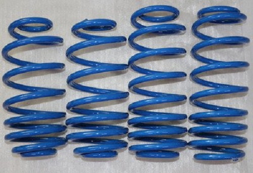
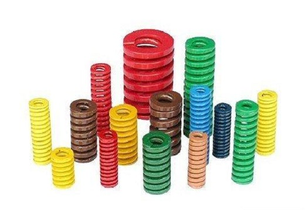

Multidimensional Analysis Of Spring Failure
2020-03-06 11:55:33
- TAG :
Spring is an indispensable part of general machinery. It plays the role of buffering balance, storing energy, automatic control, return positioning, safety insurance and so on in the working process. During the use of the spring, mechanical failure is often caused due to various reasons. For this reason, it is necessary to discuss the causes and preventive measures of spring failure.
The main factors that cause spring failure are material defects, manufacturing defects, improper heat treatment, improper surface treatment, and working environment factors. At present, spring surface defects, including collision scars, fretting wear, and pits, cause the largest proportion of spring failures, followed by cracks, inclusions, looseness, decarburization, heat treatment, and surface strengthening. Spring failure can be caused by one reason, or by a combination of several factors. Therefore, the failure analysis of the spring must first carry out various investigations and analysis of the failure phenomenon of the instance, figure out its failure mode, and then find out the cause and factor of its failure, and then propose improvement measures.
1. Spring failure caused by spring material
(1) Due to the different smelting methods of steel, there will be inclusions in the steel that cause early fatigue failure of the spring to varying degrees. Excessive inclusions or excessively large sizes, poor uniformity will affect the mechanical properties of the material, and are prone to early failure.
Preventive measures: The spring material must have excellent metallurgical quality, such as strict control of chemical composition, high purity, and low inclusion content. At the same time, the uniformity and stability of the material composition and structure are also required. In order to reduce harmful gases and impurity elements in steel and improve the purity of steel, refining technologies such as vacuum smelting and electroslag remelting should be used.
(2) Defects that may be caused during the rolling process: residual shrinkage and center cracks; folding defects; linear defects, scratches; surface pits; overheating, orange peel-like surfaces, hemp pits, which may cause spring failure. Therefore, steel mills should try to avoid and eliminate defects generated during the rolling process. Spring mills should strengthen the quality inspection of spring raw materials and use materials with good surface quality as much as possible.

2. Spring failure caused by the manufacturing process
When forming a cold-formed coil spring, the surface defects of the spring may be caused due to poor process equipment or improper adjustment operations during the coil spring process. For example, when the spring is cut on the automatic coil spring machine, the cutter may insert the inner surface of the wire adjacent to the coil. Hot formed springs have orange peel-like defects on the spring surface due to excessively high heating temperatures, which greatly reduces the fatigue life of the spring. Or, during hot forming, because the heating temperature is too low, the plasticity of the steel is not enough. During the hot forming process, the spring surface stress exceeds the material strength limit and cracks will occur. Therefore, the quality inspection of the spring surface must be strengthened during the manufacturing process to avoid surface defects.
3. Spring failure caused by defects in heat treatment process
The uneven surface and center temperature distribution of the spring during heating or cooling will cause thermal stress, and the phase change process will cause tissue stress. When the total value exceeds the strength limit of the material, it will cause cracking. This kind of defect is more common in large-sized springs quenched in water, and the cracks cannot be repaired and can only be scrapped. In addition, defects in raw materials, such as residual shrinkage in the steel, white spots, cold working knife marks, scratches and folds during cold drawing and hot rolling, will cause stress concentration and cracking during quenching. Improper heat treatment produces abnormal structures such as coarse quenched martensite; first eutectoid ferrite or free ferrite; carbide segregation; heat treatment deformation of spring; surface oxidation and decarburization will cause spring failure.
Preventive measures: In addition to strictly controlling the heating temperature and holding time, it is important to control the atmosphere in the furnace. Regularly analyze the heating gas composition to ensure that the heat supply is normal; In addition, generally hot-formed springs are cooled in oil.
4. Spring failure caused by improper surface treatment
(1) Surface shot peening process, shot peening equipment, process method and operation level have a great impact on shot peening. If the manufacturer does not regard the shot peening process as an important strengthening process, pay full attention to the shot peening process. Control or necessary detection of process effects, then shot peening may not be able to obtain its strengthening effect, and may even become the cause of early failure of the spring.
(2) If the hydrogen gas rich in the spring surface and the plating layer is not removed in a timely and sufficient manner during electroplating, it can lead to hydrogen-induced hysteresis fracture and failure during operation. Sometimes in order to remove the oxide scale and rust on the surface of the spring before the oxidation treatment or phosphating treatment, pickling is required. When excessive acid pickling causes a large amount of hydrogen to penetrate into the part, but fails to remove hydrogen in a timely and sufficient manner, hydrogen embrittlement failure of the spring can be caused.

5. Effect of working conditions on spring failure
(1) Effect of load condition on spring failure
There are many springs affected by shocks in general machinery, such as the plunger spring of an injection pump. This kind of spring is often broken at the second and third turns, because the second and third turns are subject to the impact load first and cannot be transmitted to the other turns fast enough. The first few turns have received most of the impact and are more deformed than their respective turns. Much more.
The designer should consider dynamic effects and avoid resonance of one end of the spring with one of the natural frequencies of the spring as much as possible. However, sometimes the resonance phenomenon cannot be avoided, and the stress amplitude will increase by more than 5%. Therefore, corresponding measures must be taken, such as using a higher natural frequency to prevent it from resonating with lower harmonics. Design a reasonable cam profile to reduce the pitch in the working phase. Reduce the pitch of the spring ends to change the natural frequency at impact.
Strictly speaking, when the spring works, it is impossible for the load to act on the geometric centerline, and it will form an eccentric load, which is always offset by a distance e. This eccentric load will generate additional stress, which will significantly reduce the spring's safety stress and cause the spring Premature failure. In addition, the overload of the spring at the beginning of operation is also very dangerous. The accumulation of initial overload damage will reduce the spring fatigue limit and cause early fatigue fracture.
(2) Influence of environmental factors on spring failure
Corrosion fatigue will occur when subjected to alternating loads in a corrosive environment. Since the corrosion environment can accelerate the initiation and expansion of fatigue, it will significantly reduce the fatigue life of the spring. For example, the endurance limit of spring steel samples under fresh water corrosion is only 10% to 25% in the atmosphere.
Preventive measures: It can be solved by using a corrosion-resistant material or a surface treatment method that forms a protective layer on the spring surface.
(3) Fretting wear, collision marks, pits
In spring-type parts, such as the two end rings of a helical compression spring, the hooks of a tension spring, the fixed end of a torsion bar, and fretting wear between plate and plate of a spring.
Preventive measures: In addition to eliminating vibration and improving structural design, various surface treatments such as ion implantation, chemical heat treatment, and shot peening, rolling and other surface hardening processes are used to improve the wear resistance and fatigue performance of the surface, which can improve its resistance to fretting wear Ability. Decreasing the friction coefficient of the surface, which includes solids, semi-solids, and liquids through lubrication, can also slow the process of fretting damage.
There are many cases of spring failure due to surface nicks, pits, etc., which account for a large proportion of failed parts. (4) Influence of working temperature
Because different materials have different heat resistance properties, when the temperature increases, the metal will expand with heat, and the corresponding changes in size will change the various properties of the spring. Not only that, the elastic modulus E and shear modulus G of the spring decrease, so even under the condition of constant load, the amount of deformation of the spring will increase. Moreover, under the combined effect of stress, temperature and time, deformation and relaxation will be an important mode of spring failure.